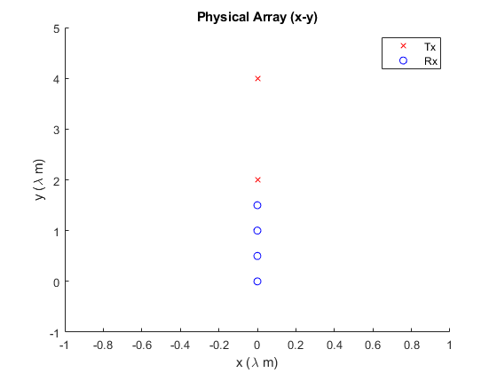

Contents
% sarAntennaArray_demo - A Short Demonstration of the sarAntennaArray class % Copyright (C) 2021 Josiah W. Smith % % This program is free software: you can redistribute it and/or modify % it under the terms of the GNU General Public License as published by % the Free Software Foundation, either version 3 of the License, or % (at your option) any later version. % % This program is distributed in the hope that it will be useful, % but WITHOUT ANY WARRANTY; without even the implied warranty of % MERCHANTABILITY or FITNESS FOR A PARTICULAR PURPOSE. See the % GNU General Public License for more details.
Include Necessary Directories
addpath(genpath("../"))
Create the Objects
fmcw = fmcwChirpParameters();
ant = sarAntennaArray(fmcw);
doc sarAntennaArray
Set FMCW Parameters
When the parameters of an fmcwChirpParameters object are changed by the user, the object automatically updates itself, namely the property 'k' and other dependencies of the changed parameters.
fmcw.f0 = 300*1e9; fmcw.K = 200*1e12; fmcw.IdleTime_s = 0*1e-6; fmcw.TXStartTime_s = 0*1e-6; fmcw.ADCStartTime_s = 0*1e-6; fmcw.ADCSamples = 50; fmcw.fS = 1000*1e3; fmcw.RampEndTime_s = 50.1*1e-6; fmcw.fC = 305*1e9;
Set Antenna Array Properties
When the parameters of an antennaArray object are changed by the user, the object automatically updates itself
ant.isEPC = false; ant.z0_m = 0; % Small MIMO Array ant.tableTx = [ 0 0 2 0 1 0 0 4 0 1]; ant.tableRx = [ 0 0 0 0 1 0 0 0.5 0 1 0 0 1 0 1 0 0 1.5 0 1]; % Display the Antenna Array ant.displayAntennaArray();
Load in Saved FMCW Parameters
ant.loadAntennaArray("smallMIMO");
Save FMCW Parameters
ant.saveAntennaArray("smallMIMO_2");
Anteanna array saved to: smallMIMO_2